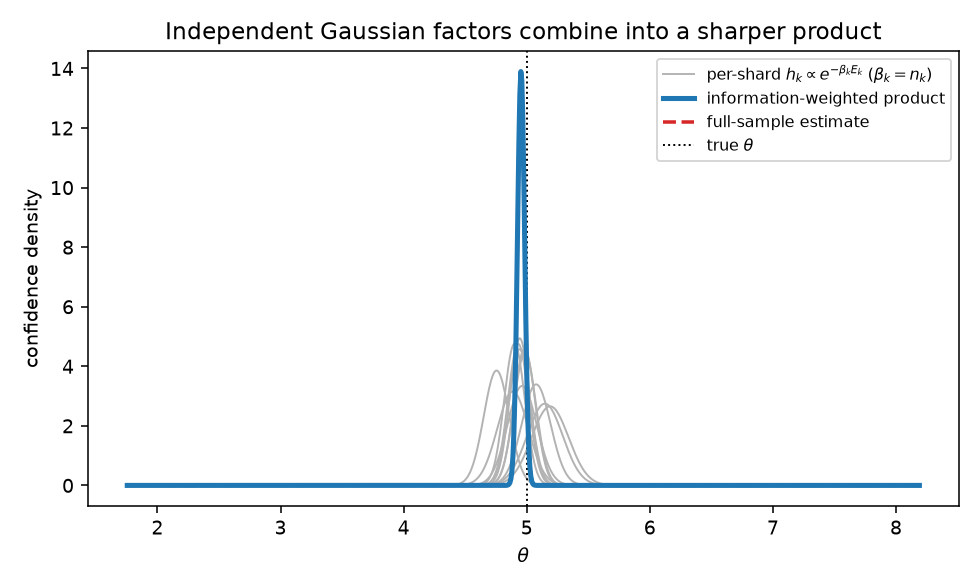

01 / EMIT
Keep uncertainty
Each worker emits an estimate and information matrix, plus sample count and evidence lineage.
Forks should return uncertainty and provenance, not unexplained scalars. For independent, non-overlapping evidence about one target, Gaussian confidence factors merge through associative natural parameters.
Each worker emits an estimate and information matrix, plus sample count and evidence lineage.
Compatible Gaussian factors merge as sums of precision, precision-weighted location, and a quadratic constant.
The exact product normalizer contains a disagreement energy that grows when confident workers disagree.
What the thermodynamic language means: with per-observation quadratic energy, sample size can be written as inverse temperature. That convention is interpretive. The invariant statistical quantity is total precision nJ.
The artifact contains algebraic checks, deterministic sanity checks, and three platform logs. The platform rows are intentionally not compared as a benchmark: operations, dates, accounts, and environments differ.

| Claim | Artifact evidence | Not established |
|---|---|---|
| Reducer algebra | Hierarchical merge, deduplication, exact-normalizer tests | Arbitrary non-Gaussian pooling |
| Statistical sanity | Mean, regression, 8-seed IID logistic sweep | Broad efficiency theorem |
| Outlier behavior | Scalar demo + multivariate test | Certified Byzantine tolerance |
| islo | 255/256 named snapshot restore-and-run | Isolated restore microbenchmark |
| Daytona | 1024/1024 default creates | Named snapshot restore |
| Tensorlake | 256/256 default creates | Named snapshot restore |
Yossi Eliaz. “Boltzmann MapReduce: A Partition-Function Reduce for Forkable Sandboxes.” arXiv:2607.09689 [cs.AI], 2026. doi:10.48550/arXiv.2607.09689.
Version note: citation metadata follows arXiv v1, submitted 17 June 2026. The repository PDF is the corrected revision and may differ in title and content from arXiv v1.
@misc{eliaz2026boltzmann,
title = {Boltzmann MapReduce: A Partition-Function
Reduce for Forkable Sandboxes},
author = {Yossi Eliaz},
year = {2026},
eprint = {2607.09689},
archivePrefix = {arXiv},
primaryClass = {cs.AI},
doi = {10.48550/arXiv.2607.09689},
url = {https://arxiv.org/abs/2607.09689}
}Multiplying overlapping factors double-counts information. The reducer rejects repeated non-empty evidence IDs; distinct IDs still do not prove independence.
If workers estimate genuinely different local truths, a single common-parameter pool is misspecified. Use hierarchical or mixture models.
A worker can fabricate both location and precision. The included cap is a transparent stress-test heuristic, not a security guarantee.
The reducer uses Cholesky solves, validates positive-definite information matrices, serializes provenance, and exposes disagreement energy. The full uv-locked command below verifies tests, package builds, every local path, and the PDF; the paper step requires pdflatex and bibtex.
git clone https://github.com/zozo123/boltzmann-mapreduce cd boltzmann-mapreduce uv sync --locked uv run --locked python scripts/verify_e2e.py